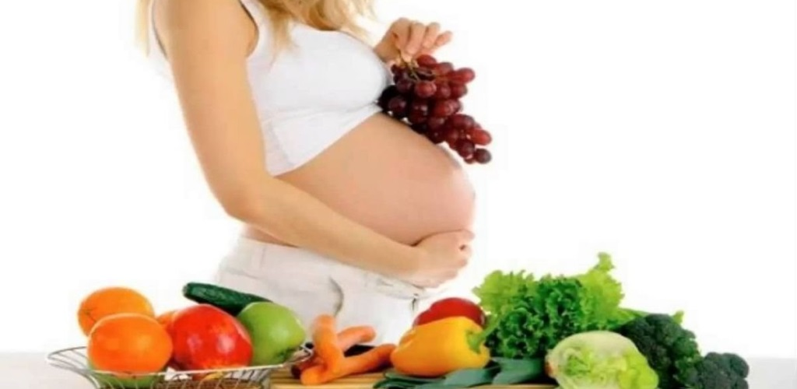

Consume verduras y frutas de temporada. Incluye alimentos ricos en calcio, hierro y ácido fólico. Disminuye el consumo de pan dulce, pastelitos, galletas, frituras, pizzas, hamburguesas, hot-dogs, refrescos y postres. Estos son alimentos con alto contenido de grasa y azúcares y con pocas vitaminas, minerales y fibra.
dicho incremento también puede provocar vómito y náuseas. Asimismo, el bajo apetito también puede estar relacionado con la subida de la progesterona, hormona que retarda el proceso de digestión. esto, debemos recalcar que no hay de qué preocuparse si existe una falta de apetito en los primeros días del embarazo.
Una dieta desequilibrada puede ocasionar serios trastornos y en el caso de embarazadas afectar también el desarrollo del cerebro de su bebé en gestación. Los daños pueden ser reversibles o no, de corto o largo plazo, generar alteraciones en sus funciones motoras y cognitivas.28 oct 2020
Determina que tener falta de alimentos durante los primeros tres meses de embarazo puede ocasionar riesgos para el futuro bebé. En concreto, el trabajo publicado en la revista American Journal of Epidemiology, asocia esta falta con un aumento de la mortalidad en general.30 mar 2015
